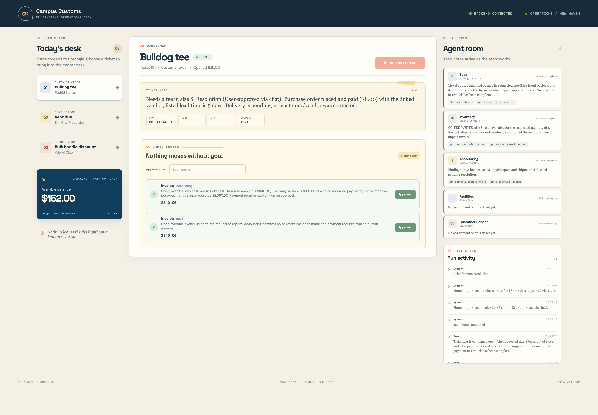
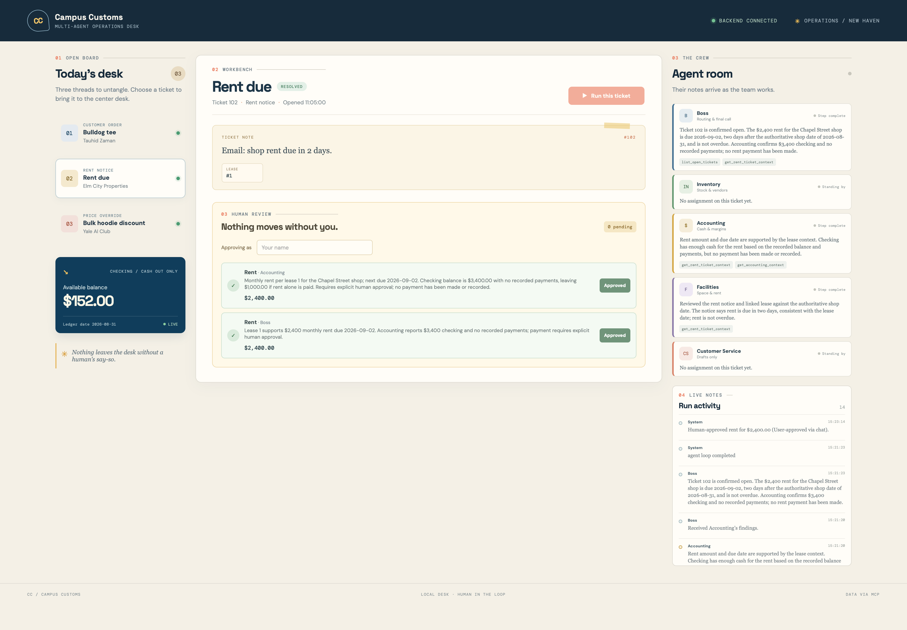
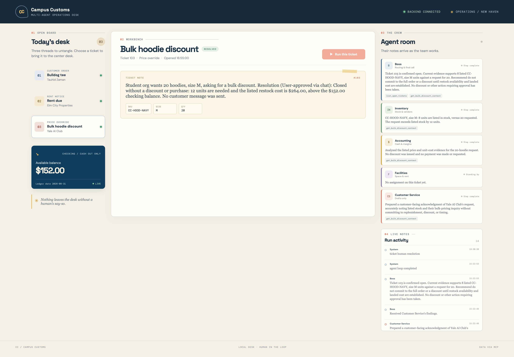

Ticket 101 · Bulldog tee
Resolved · order placed, delivery pending
Static pixel screenshots of the React desk after the Problem 9 run. Each capture shows the ticket selected, agent activity, recorded approvals, and persisted database status.


